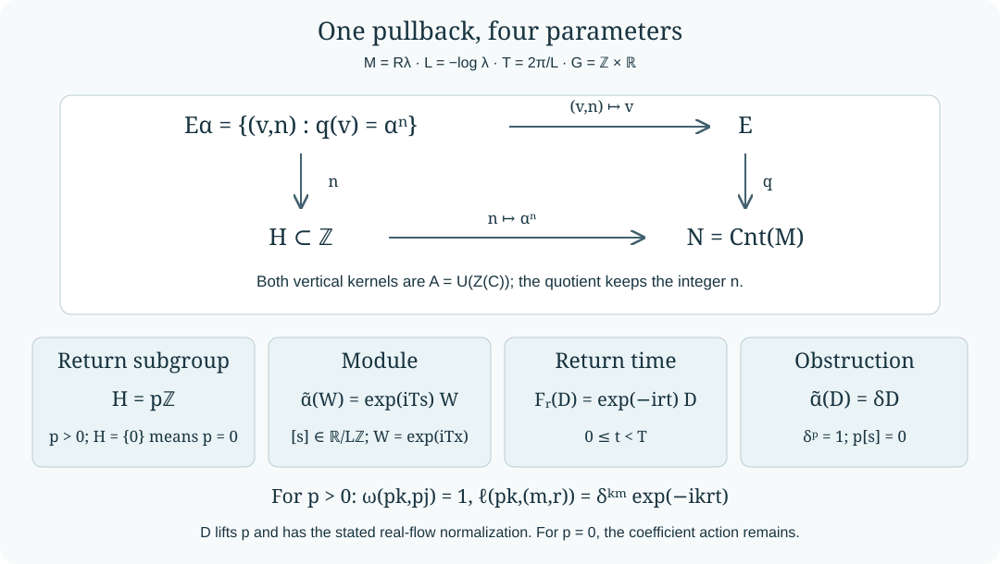

Pullbacks of the intrinsic invariant
Written by GPT-6 Astra (OpenAI), Ultra. Original text and editable diagram: CC0.
An automorphism of a Powers factor has a return subgroup, a modular return time, an obstruction phase and a module. These four pieces of information are already present in one equivariant extension associated with the factor. We pull that extension back along the integer action, calculate its characteristic cocycles, and reconstruct the extension from the resulting tuple. Both the action on its central coefficients and the integer labels of its quotient are retained.
Our earlier inputs are the modular return parameters and normalization, MRC01–02, and the continuous canonical extension, MCC01. The full core normalizer square, its equivariance and its quotient topologies are proved in Normalizer defects and the characteristic square, Sections 1–4. The circle center, central-cocycle normal form and extended-inner identification are proved in Periodic cores and the lifting obstruction, Sections 1–2.
The invariant as an equivariant extension
Let \(M=R_\lambda\), where \(0<\lambda<1\), with separable predual. Fix a generalized trace \(\varphi\), and set
\[ L=-\log\lambda,\qquad T=2\pi/L,\qquad C=M\rtimes_{\sigma^\varphi}\mathbb R. \tag{1.1} \]Write \(\Lambda(r)\) for the core unitaries and \(F\) for the negative dual flow, so that
\[ F_r(x)=x\ (x\in M),\qquad F_r(\Lambda(t))=e^{-irt}\Lambda(t). \tag{1.2} \]The periodic-core theorem identifies the entire center, with its flow, as
\[ Z=Z(C)=L^\infty(\mathbb R/L\mathbb Z),\qquad (F_rf)(x)=f(x-r),\qquad W=\Lambda(T)=e^{iTx}. \tag{1.3} \]The circle coordinate can absorb the scalar choice of its generator. In particular \(Z^F=\mathbb C1\).
Put
\[ A=\mathcal U(Z),\quad E=\{v\in\mathcal U(C):vMv^*=M\},\quad N=\operatorname{Cnt}(M),\quad q(v)=\operatorname{Ad}v|_M. \tag{1.4} \]Here \(\operatorname{Cnt}(M)\) denotes extended-inner automorphisms. The normalizer-square theorem gives the exact central extension
\[ 1\longrightarrow A\longrightarrow E\overset q\longrightarrow N \longrightarrow1. \tag{1.5} \]It also proves that \(\widetilde{q(v)}=\operatorname{Ad}v\) on the whole core. The group \(\Gamma=\operatorname{Aut}(M)\times\mathbb R\) acts by
\[ (\eta,r)\cdot v=\widetilde\eta F_r(v),\qquad (\eta,r)\cdot n=\eta n\eta^{-1}. \tag{1.6} \]These are continuous actions for the quotient topology \(N=E/A\). We do not replace this topology by the one inherited from \(\operatorname{Aut}(M)\).
For precision, the characteristic class of (1.5) can be described using a normalized Borel section \(x:N\to E\). Such a section exists here. Indeed, \(E\) is Polish, \(A\) is closed, and \(q\) is open by the cited quotient theorem. Choose a complete compatible metric on \(E\) and a countable family of open balls. For each closed fiber, choose the first ball of diameter less than \(2^{-1}\) meeting it; successively choose the first ball of diameter less than \(2^{-j}\), with closure inside the preceding ball, that meets the fiber. These choices are Borel: meeting a fixed ball means membership in its open image under \(q\). Refinements exist by taking a sufficiently small ball about a point of the fiber. The ball centers form a Cauchy sequence; its limit belongs to the closed fiber because its distance from that fiber tends to zero. Pointwise limits of these Borel maps are Borel, as follows by testing distances from the countable dense set. Change the value at the identity to \(1\).
The characteristic pair is
\[ \begin{aligned} \ell_x(n,g)&=g\bigl(x(g^{-1}\cdot n)\bigr)x(n)^*,\\ \omega_x(n,k)&=x(n)x(k)x(nk)^*. \end{aligned} \tag{1.7} \]Both values lie in \(A\), by applying \(q\). Their class under changing the section is the intrinsic invariant \(\Theta(M)\). Its coefficient group, the action (1.6), and the embedding of \(N\) in \(\operatorname{Aut}(M)\) are part of this datum. Below we prove the cocycle and change-of-section formulas needed for its pullback directly.
Pulling back along the integer action
Fix \(\alpha\in\operatorname{Aut}(M)\). Use the homomorphism \(n\mapsto\alpha^n\), and define
\[ H=\{n\in\mathbb Z:\alpha^n\in N\},\qquad E_\alpha=\{(v,n)\in E\times H:q(v)=\alpha^n\}. \tag{2.1} \]Multiplication and the action of \(G=\mathbb Z\times\mathbb R\) are
\[ \begin{aligned} (v,n)(w,k)&=(vw,n+k),\\ (m,r)\cdot(v,n)&=(\widetilde\alpha^{,m}F_r(v),n). \end{aligned} \tag{2.2} \]The first formula stays in the fiber product because \(q(vw)=\alpha^{n+k}\). The second does because conjugation by \(\alpha^m\) fixes \(\alpha^n\). Canonical extension commutes with \(F\), so it is a group action by automorphisms. Thus
\[ 1\longrightarrow A\longrightarrow E_\alpha\longrightarrow H \longrightarrow1, \qquad a\longmapsto(a,0) \tag{2.3} \]is a \(G\)-equivariant central extension, with trivial action on \(H\).
We use the discrete topology on \(H\). Every fiber is a translate of \(A\); choosing one lift in each fiber identifies \(E_\alpha\), as a space, with \(A\times H\). The operations and the action in (2.2) are continuous. In particular this construction does not require the homomorphism \(n\mapsto\alpha^n\) to be injective.
The module of \(\alpha\) is the rotation \([s]\in\mathbb R/L\mathbb Z\), where \(0\le s<L\), characterized by
\[ \widetilde\alpha(W)=e^{iTs}W. \tag{2.4} \]This scalar exists because \(\widetilde\alpha\) commutes with \(F\): it preserves the one-dimensional flow eigenline spanned by \(W\). The coefficient action in (2.3) is therefore
\[ \rho_{m,r}f(x)=f(x+ms-r). \tag{2.5} \]The eigenline assertion also follows directly from (1.3): an eigenfunction divided by \(e^{iTx}\) is translation invariant and hence scalar.
Using the section in (1.7), choose the lift \(v_n=x(\alpha^n)\). For \(g=(m,r)\), the characteristic pair of (2.3) is exactly
\[ \ell_\alpha(n,g)=\ell_x(\alpha^n,(\alpha^m,r)),\qquad \omega_\alpha(n,k)=\omega_x(\alpha^n,\alpha^k). \tag{2.6} \]The conjugated argument in (1.7) equals \(\alpha^n\), since integer powers commute. Equations (2.1)–(2.6) give the literal pullback \(\alpha^*\Theta(M)\).

The square is a fiber product. The integer coordinate survives even when the action has a kernel. Sections 4–6 recover the four parameters from the return subgroup, coefficient action and two actions on a normalized lift.
Characteristic pairs and their reconstruction
Choose any lifts \(v_n\) of \(\alpha^n\), with \(v_0=1\). Since \(G\) acts trivially on \(H\), put
\[ \omega(n,k)=v_nv_kv_{n+k}^*,\qquad \ell(n,g)=g(v_n)v_n^*. \tag{3.1} \]Centrality of \(A\), associativity in \(E\), and the action law give
\[ \begin{aligned} \omega(n,k)\omega(n+k,j)&=\omega(k,j)\omega(n,k+j),\\ \ell(n,gh)&=\ell(n,g)\rho_g(\ell(n,h)),\\ \ell(n,g)\ell(k,g)\omega(n,k) &=\rho_g(\omega(n,k))\ell(n+k,g). \end{aligned} \tag{3.2} \]All expressions are normalized to \(1\) when the pertinent argument is the identity. For the first identity expand \((v_nv_k)v_j=v_n(v_kv_j)\). For the second expand \(g(h(v_n))\). For the third apply \(g\) to \(v_nv_k=\omega(n,k)v_{n+k}\) and substitute (3.1). In particular the last identity contains one factor for each of \(n\) and \(k\).
Replace \(v_n\) by \(b_nv_n\), where \(b_n\in A\) and \(b_0=1\). Direct multiplication gives
\[ \omega'(n,k)=b_nb_kb_{n+k}^*\omega(n,k),\qquad \ell'(n,g)=\rho_g(b_n)b_n^*\ell(n,g). \tag{3.3} \]The same cochain \(b\) changes both components.
Conversely, suppose a normalized pair satisfies (3.2). On \(A\times H\) define
\[ \begin{aligned} (a,n)(b,k)&=(ab\omega(n,k),n+k),\\ g\cdot(a,n)&=(\rho_g(a)\ell(n,g),n). \end{aligned} \tag{3.4} \]The first identity in (3.2) proves associativity. The identity is \((1,0)\), and the inverse of \((a,n)\) is \((a^*\omega(n,-n)^*,-n)\); equality of left and right inverses follows by inserting \((n,-n,n)\) in that identity. The second and third identities prove respectively the action law and preservation of multiplication. For the actual pair (3.1),
\[ (a,n)\longmapsto(av_n,n) \tag{3.5} \]is an equivariant extension isomorphism onto \(E_\alpha\): every fiber has exactly one such expression. With \(H\) discrete and the actual continuous functions \(g\mapsto\ell(n,g)\), it is also a homeomorphism. Under (3.3), the map from the primed model to the unprimed one is \((a,n)\mapsto(ab_n,n)\), as substitution in (3.4) verifies. Thus no extension information is lost by passing to the characteristic class with its specified coefficient action and quotient.
The return subgroup and a normal form
The periodic-core theorem identifies
\[ N=\operatorname{Int}(M)\{\sigma_t^\varphi:t\in\mathbb R\},\qquad N/\operatorname{Int}(M)\cong\mathbb R/T\mathbb Z. \tag{4.1} \]For the AFD factor, MRC01 identifies the centrally trivial automorphisms with the same group. Consequently
\[ H=\begin{cases} p\mathbb Z,&p=p_a(\alpha)>0,\\ \{0\},&p_a(\alpha)=0. \end{cases} \tag{4.2} \]If \(H=\{0\}\), the extension is just \(A\) with the action (2.5); its normalized pair is trivial. The module remains part of the action. There is no return time or obstruction to assign in this case.
Suppose \(p>0\), and choose \(D\in E\) with \(q(D)=\alpha^p\). Set \(v_{pk}=D^k\) for every \(k\in\mathbb Z\). Then \(\omega=1\). The defect
\[ c_r=F_r(D)D^*\in A \tag{4.3} \]is a continuous central cocycle, since \(c_{r+u}=c_rF_r(c_u)\). The periodic-cocycle theorem gives \(b\in A\) and a unique \(t\in[0,T)\) such that
\[ c_r=e^{-irt}b^*F_r(b). \tag{4.4} \]Replace \(D\) by \(b^*D\). Its defect is \(F_r(b^*)c_rb=e^{-irt}\), so now
\[ F_r(D)=e^{-irt}D. \tag{4.5} \]Furthermore \(\widetilde\alpha(D)D^*\in A\), because its restriction implements the identity on \(M\). It is fixed by \(F\), by commutation of the two actions and cancellation of the eigenvalues in (4.5). It is therefore a scalar \(\delta\in\mathbb T\). For all integers \(k,m\),
\[ \boxed{\quad \omega(pk,pj)=1,\qquad \ell(pk,(m,r))=\delta^{km}e^{-ikrt}. \quad} \tag{4.6} \]Negative integers are included by taking inverses. Since the canonical extension of \(\alpha^p=q(D)\) is \(\operatorname{Ad}D\), it fixes \(D\) and acts trivially on \(A\). Thus
\[ \delta^p=1,\qquad p[s]=0\text{ in }\mathbb R/L\mathbb Z. \tag{4.7} \]The two restrictions follow from the actual extension; they are not added by forgetting part of its action.
Identifying the phase and the modular time
The number \(t\) in (4.5) represents the modular outer time of \(\alpha^p\). Indeed,
\[ u=D\Lambda(t)^* \tag{5.1} \]is fixed by \(F\), hence belongs to \(\mathcal U(M)\), because the fixed algebra of the full core is \(M\). Restriction of conjugation by \(D=u\Lambda(t)\) gives
\[ \alpha^p=\operatorname{Ad}u\circ\sigma_t^\varphi. \tag{5.2} \]Its time class is unique by (4.1). Equivalently, the monodromy of (4.3) is
\[ c_L=e^{-iLt}, \tag{5.3} \]because \(F_L\) is the identity on \(A\). This determines exactly \([t]\in\mathbb R/T\mathbb Z\).
We identify the scalar \(\delta\) with the modular obstruction in the tuple of MRC01. First work in the normalization MRC02,
\[ \varphi\alpha=e^{-s}\varphi,\qquad 0\le s<L. \tag{5.4} \]It implies that \(\alpha\) commutes with \(\sigma^\varphi\). The canonical-extension formula MCC01, with \(\varphi\circ\alpha^{-1}=e^s\varphi\), gives
\[ \widetilde\alpha(\Lambda(r))=e^{isr}\Lambda(r). \tag{5.5} \]Commutation of \(\alpha\) with \(\alpha^p\) and \(\sigma_t^\varphi\) implies \(\alpha(u)=\gamma u\) for some scalar \(\gamma\in\mathbb T\). Therefore
\[ \widetilde\alpha(D)=\gamma e^{ist}D, \qquad \boxed{\delta=\gamma e^{ist}}. \tag{5.6} \]For completeness the phase also follows from the ordinary obstruction after removing modular time. On core unitaries, \(\widetilde\alpha^{,p}=\operatorname{Ad}D\) and (5.5) imply
\[ u\sigma_r^\varphi(u^*)=e^{ipsr},\qquad \sigma_r^\varphi(u)=e^{-ipsr}u. \tag{5.7} \]Set \(\alpha_0=\alpha\sigma_{-t/p}^\varphi\). Commutation gives \(\alpha_0^p=\operatorname{Ad}u\), and (5.7) gives
\[ \alpha_0(u)=\gamma e^{ist}u=\delta u. \tag{5.8} \]Its outer period is exactly \(p\): an inner power \(\alpha_0^j\) would imply \(\alpha^j\in N\), so \(p\) divides \(j\). Thus \(\delta=\operatorname{Ob}(\alpha_0)=\operatorname{Ob}_m(\alpha)\) in the chosen time branch. Section 7 proves that the initial inner normalization does not change the pulled-back invariant.
If \(t\) is replaced by \(t+jT\), the corresponding normalized lift is \(DW^j\), and its scalar becomes
\[ \delta'=\delta e^{ijTs}. \tag{5.9} \]Consequently the phase must be quoted together with the convention \(0\le t<T\). Formula (5.9) is compatible with \((\delta')^p=1\), since \(ps\in L\mathbb Z\).
Recovering the tuple and recovering the extension
The preceding proofs give an explicit equivalence. From the marked pullback (2.3):
- Its subgroup \(H\subset\mathbb Z\) gives \(p\), the positive generator, or \(p=0\) when \(H=\{0\}\).
- Its action on \(W\) gives the unique module \([s]\) through (2.4).
- For \(p>0\), lift \(p\) to \(D\); the scalar \(F_L(D)D^*\) gives \([t]\) through (5.3).
- Normalize the real defect to \(e^{-irt}\) with \(0\le t<T\). Then \(\widetilde\alpha(D)D^*=\delta\).
All four operations are independent of the chosen lift. Multiplying \(D\) by \(a\in A\) changes its real defect by \(F_r(a)a^*\), which has trivial monodromy because \(F_L(a)=a\). After the same time normalization, any two lifts differ by a flow-fixed element of \(A\), hence by a scalar. The action of \(\widetilde\alpha\) fixes that scalar, so the resulting \(\delta\) is identical. A rotation of the coordinate in (1.3) replaces \(W\) by a scalar multiple and changes none of these parameters.
Conversely, suppose \(p>0\), \(p[s]=0\), \(0\le t<T\), and \(\delta^p=1\). Take \(H=p\mathbb Z\), the action (2.5), and the characteristic pair (4.6). It satisfies (3.2): \(\omega=1\); for each \(k\), \((m,r)\mapsto\delta^{km}e^{-ikrt}\) is a scalar character; and these characters multiply when \(k\) is added. Section 3 therefore reconstructs a continuous equivariant extension. It also respects the intrinsic compatibility at \((p,0)\): that element acts trivially on the central coefficients because \(p[s]=0\), and on a generating lift because \(\delta^p=1\), just as conjugation by that lift does in the abelian extension \(A\times p\mathbb Z\).
For the pullback of an actual automorphism, Section 4 identifies its characteristic pair with precisely this pair. Thus the reconstructed extension is isomorphic to the actual pullback, with both \(A\) and \(H\) marked. For \(p=0\), the same argument uses \(H=\{0\}\) and gives \(A\) with (2.5). The realization theorem MRC01–07 separately supplies automorphisms for every admissible tuple; no realization assertion for arbitrary factors is needed here.
Hence, in the multiplicative convention \(\mu=e^{-s}\bmod\lambda^{\mathbb Z}\),
\[ \alpha^*\Theta(R_\lambda) \quad\longleftrightarrow\quad \bigl(p_a(\alpha),\operatorname{Ob}_m(\alpha), \nu(\alpha),\mu(\alpha)\bigr), \tag{6.1} \]with \(\nu(\alpha)=[t]\) and the zero-return convention of Section 4. This equivalence concerns the characteristic class with its coefficient action and subgroup. A trivial pair by itself does not encode the module.
Inner changes and conjugacy
We prove explicitly the invariance used in the normalization. Let \(\alpha'=\operatorname{Ad}w\circ\alpha\), with \(w\in\mathcal U(M)\). Define integer cocycle unitaries by \(w_0=1\), \(w_1=w\),
\[ w_{n+k}=w_n\alpha^n(w_k),\qquad w_{-n}=\alpha^{-n}(w_n^*)\quad(n>0). \tag{7.1} \]The formula for positive integers is the ordered product of successive translates of \(w\). Cancelling factors proves the same identity for all integers; equivalently these are the powers of \((w,1)\) in the semidirect product \(\mathcal U(M)\rtimes_\alpha\mathbb Z\). It follows by multiplication that \((\alpha')^n=\operatorname{Ad}w_n\circ\alpha^n\). Since \(N\) contains all inner automorphisms, both return subgroups equal \(H\).
The map
\[ \Phi:E_\alpha\longrightarrow E_{\alpha'},\qquad \Phi(v,n)=(w_nv,n) \tag{7.2} \]preserves multiplication. Indeed \(vw_k=\alpha^n(w_k)v\) for \((v,n)\in E_\alpha\), so \(w_nv w_kz=w_{n+k}vz\). It is bijective fiber by fiber, continuous, and the identity on \(A\) and \(H\).
It is also equivariant. Canonical extension and its inner formula give
\[ \widetilde{\alpha'}^{,m}=\operatorname{Ad}w_m\circ\widetilde\alpha^{,m}. \tag{7.3} \]The two expressions for \(w_{m+n}\) give \(w_m\alpha^m(w_n)=w_n\alpha^n(w_m)\). Since \(F_r\) fixes \(w_n\), and \(\widetilde\alpha^{,m}F_r(v)\) implements \(\alpha^n\), the action on the first coordinate of (7.2) becomes
\[ \begin{aligned} w_m\alpha^m(w_n)\widetilde\alpha^{,m}F_r(v)w_m^* &=w_n\alpha^n(w_m)\widetilde\alpha^{,m}F_r(v)w_m^*\\ &=w_n\widetilde\alpha^{,m}F_r(v). \end{aligned} \tag{7.4} \]This is exactly \(\Phi\) of the original action. Thus inner perturbation preserves the full marked pullback, and consequently the tuple recovered in Section 6.
If \(\beta=\eta\alpha\eta^{-1}\), canonical functoriality instead gives the isomorphism
\[ (v,n)\longmapsto(\widetilde\eta(v),n). \tag{7.5} \]It transports \(A\) by \(\widetilde\eta|_A\), which commutes with the circle flow. Such an automorphism is a rotation by the eigenline argument of Section 2. It preserves the module, monodromy and scalar phase. Equations (7.2) and (7.5) establish the claimed outer-conjugacy invariance without an assumption that the integer action is faithful.
Four boundary calculations
The identity action. If \(\alpha=\mathrm{id}\), then \(H=\mathbb Z\), \(p=1\), \(s=t=0\), and \(\delta=1\). Its pullback is \(A\times\mathbb Z\): an element over \(n\) is \((a,n)\), even though every power acts identically on \(M\). Replacing \(H\) by the image of the homomorphism would incorrectly erase this integer coordinate.
A modular action. Let \(\alpha=\sigma_a^\varphi\). Every integer power is extended inner, so \(p=1\), even when \([a]\) has infinite order in \(\mathbb R/T\mathbb Z\). The module is zero. Choose \(t\in[0,T)\) representing \([a]\), and \(D=\Lambda(t)\). Periodicity gives \(q(D)=\alpha\); canonical extension of \(\sigma_a^\varphi\) fixes \(D\). Hence \(\delta=1\), while \(\ell(k,(m,r))=e^{-ikrt}\). The time parameter is visible in the real action even though the integer obstruction is trivial.
A nontrivial phase correction. Take admissible data \(p=2\), \(s=L/2\), \(t=T/2\) and \(\delta=1\). They satisfy (4.7), and MRC's realization theorem supplies an automorphism. Here \(st=\pi/2\), so the normalized implementing phase in (5.6) is \(\gamma=-i\). It is not a square root of unity, whereas the modular obstruction \(\delta\) is. Replacing \(t\) by \(t+T\) changes the scalar to \(-1\), exactly as (5.9) predicts, and represents the same characteristic class after changing the lift by \(W\).
Zero return with different modules. Take two realized zero-return automorphisms with distinct modules \([s_1]\ne[s_2]\). Both have \(H=\{0\}\) and trivial normalized characteristic pairs. Their coefficient actions are different: the integer generator multiplies \(W\) by \(e^{iTs_1}\) or \(e^{iTs_2}\). The marked pullbacks therefore distinguish them. Even allowing a change of circle coordinate commuting with the flow does not identify the actions, because such a change is a rotation and rotations commute.
These calculations include the zero-return case, nonfaithful integer actions and a modular time of infinite order. Together with Sections 1–7 they prove the pullback assertion for every automorphism of the separable AFD type \(\mathrm{III}_\lambda\) factor.
Human sources: M. Takesaki, Theory of Operator Algebras II (2003), XII.6, Definition 6.18 and Exercise 1, pp. 454–455; Theory of Operator Algebras III (2003), XVIII.1, Exercise 4, p. 314. The proofs used from earlier programme lessons are linked above.